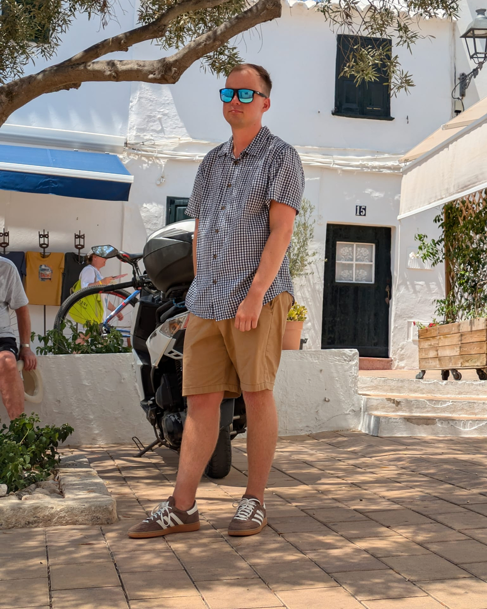
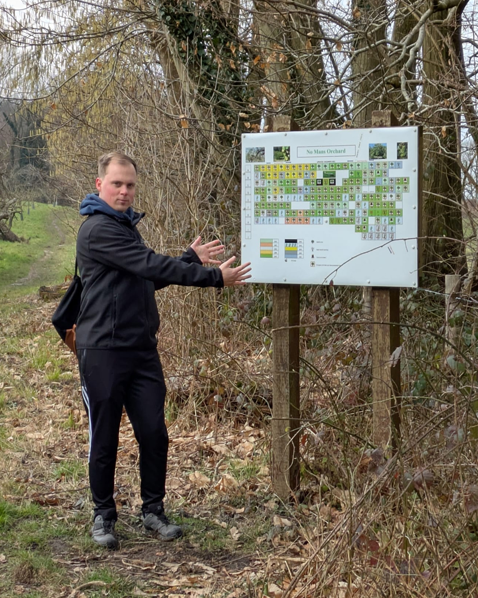

01
Clearer first impressions
Your headline, About section, banner, and Featured section start doing more of the heavy lifting.
For founders and B2B leaders whose work is strong, but hard to assess quickly online. I help you turn your perspective, experience, and real stories into a LinkedIn presence that builds trust and attracts better-fit conversations.
The problem is that online, real depth gets flattened fast. So a lot of smart people end up sounding smaller than they are.
They default to safe content, tidy frameworks, polished opinions, and generic “value”.
It sounds professional, but makes them easy to forget.
This is less of a content problem, and more of a trust problem than most people realise.
That usually means fixing the parts of LinkedIn that shape first impressions fastest: your profile, your positioning, your content, and your overall presence.
Your headline, About section, banner, and Featured section start doing more of the heavy lifting.
Your content stops sounding vague, generic, or over-polished and starts feeling human, specific, and credible.
The right people understand your value faster, which changes the quality of the conversations that follow.
This is not random posting. It is a trust-led LinkedIn system built around positioning, story, and strategy.
So your LinkedIn content sounds like a real person with perspective, not a content machine with good formatting.
So your presence has direction, consistency, and a stronger link to the business conversations you actually want.
So your value is easier to understand quickly and your profile stops leaking interest and opportunities.
Depending on what you need, I can support this done-for-you, strategically, or through a mix of both.
I get clear on your business, your strengths, your perspective, your stories, and how you want to be perceived.
Your LinkedIn profile gets sharpened so profile views are more likely to turn into followers, enquiries, and better-fit calls.
I extract your insights, decisions, observations, and real stories, then shape them into content people actually remember.
Because good content on its own is rarely enough. Positioning, consistency, trust cues, and follow-through matter too.
It produces content. It doesn’t build trust.
You’re a founder, CEO, or established B2B leader whose work is strong, but whose LinkedIn presence still undersells the level you operate at.
You do not want to create performative, fake content just to stay visible. You want something sharper, truer, and easier to trust.
You take your reputation seriously, and you want a profile and content presence that support better-fit conversations.
You want generic content that sounds polished on the surface, but could have been written for almost anyone.
You care more about vanity metrics than trust, positioning, and attracting the right people.
You want someone to invent a persona for you, rather than draw out what is already true and make it clearer online.
I work with founders and B2B leaders who have real depth, but whose LinkedIn presence does not yet carry that depth properly.



That matters because online, people assess you quickly. If your profile is vague, your content is generic, or your perspective feels diluted, people fill in the gaps for themselves. Usually badly.
I am naturally more reflective than loud, which is probably part of why I have no interest in performative thought leadership.
What interests me is the point where trust starts to form. Usually, it is not because someone posted a better framework. It is because they sounded clear, specific, human, and like there was an actual mind behind the words.
My approach is storytelling-led, but grounded in positioning, psychology, and business outcomes. So this is not about turning your LinkedIn into a diary. It is about finding the right moments, decisions, tensions, and perspectives inside your work, then shaping them into something your audience can actually feel.
You do not need more content for the sake of it. You need a profile and presence that make your expertise easier to trust. If you want your LinkedIn to feel more like you, build trust faster, and attract better-fit conversations, let’s talk.
Usually less than people expect.
After the initial setup, your job is basically:
Everything else, writing, planning, editing, formatting, scheduling, and distribution, is handled inside the system.
You stay focused on running your business while still showing up as an authority on LinkedIn.
I don’t guess. I build the voice properly upfront.
The goal isn’t “nice writing” or generic copy.
It’s your thinking, translated into posts and positioning that land.
Yes. You have final approval on everything.
Nothing goes out without a green light from you.
And we’ll agree guardrails early (topics, boundaries, proof limits, “don’t say this publicly”) so you’re never worrying about risk.
We’ll track the right signals for your market, and you’ll usually feel the first movement within a few weeks:
This is a compounding system. The strongest results show up as credibility and relationships stack over months, especially with multi-year cycles.
Early on, the main win is typically quality, not volume. The volume comes as the consistency compounds.
No, because the content isn’t repetitive. It’s structured.
We rotate across:
The repetition is in the positioning, not in the content.
And in high-trust markets, the right people often watch quietly. So staying consistent in this way is what builds trust and makes working with you the obvious choice.
This is baked into how I operate.
I keep your content commercially valuable without making it operationally replicable.
That means:
Only if your time is valuable. It is.
If you’re the bottleneck for:
…then this is leverage.
You’re not paying for posts.
You’re paying for a system that turns your judgement and proof into market familiarity, without stealing countless hours every week.
Three things:
Everything else is handled inside the system.
I get it, that happens.
I can build proof without naming clients:
Proof doesn’t necessarily need logos. It needs clarity.
That’s usually an advantage, because most people in niche industries either:
I write to your buyer’s decision logic in plain English, i.e. the trade-offs, risks, and patterns they actually care about.
If anything, clarity in a niche market stands out more.